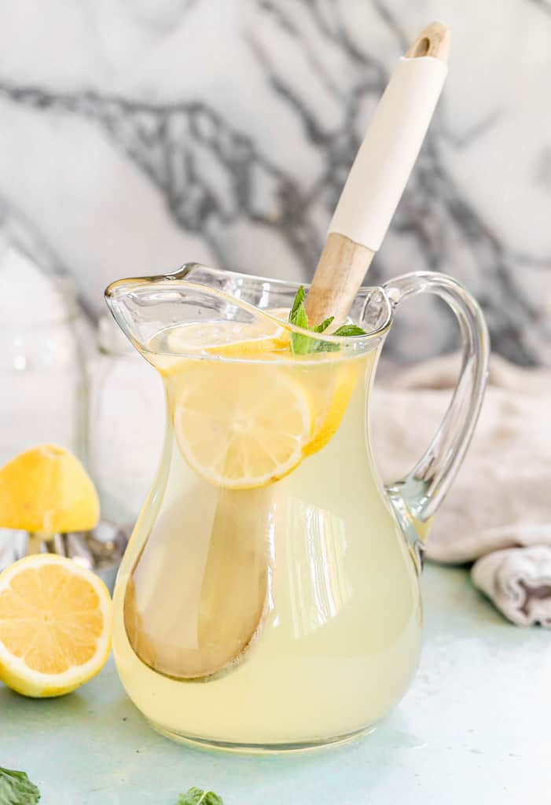

How to make the best lemonade
Ingredients for about 6 servings:
- 1 1/4 cups white sugar (preferably superfine sugar)
- 6 meyers lemons (preferably from a farmers market to save yourself from having to de-wax them)
- 5 cups cold water
- 1/4 cup of room temperature water
- Start off by preparing the lemons, if they are from a store they probably have a thin wax coating. Because we are extracting the oils from the peel it is best to de-wax them first, by placing them in a colander and pouring boiling water over them, then quickly rubbing them with a brush or paper towel. Immediately afterwards run cool water over them to cool them back off.
- Now, you must peel the lemons with a potato peeler (or paring knife), carefully trying to avoid taking the white part of the peel as it would add a bitter taste. Place them into a bowl or freezer bag.
- Now measure out 1 1/4 cup of superfine sugar (also called baker's sugar or castor sugar). If you do not have any super fine sugar, you can make your own from granulated white sugar using a coffee grinder or food processor. It sould only take 2-3 pulses to make it fine enough, but not too fine like powdered sugar. Then it will work the best for absorbing the oils.
- Pour the sugar over the lemon zest, toss to combine, then muddle with a masher, pestle, large spoon etc to help get the process started. Then place it in the fridge and wait at least 2 hours or overnight.
- Juice the lemons! There are a variety of ways to juice lemons, if you don't have a juicer you can roll them around on a flat surface with your hand to soften them up then use a fork or spoon as a "juicer". Alternatively, if you have a blender and want to keep the pulp, you can peel them like an orange and remove the seeds from the wedges with a pointy knife then pop them into the blender.
- Take that bowl of sugar and lemon peel and see if the sugar is fully dissolved. If not, add a 1/4 cup of boiling water to help it dissolve. Then add a little more and so on, but there shouldn't be more than a 1:1 ratio of water to sugar. An alternative method, instead of boiling water, is to add the lemon juice too the sugar /peel mix to help the sugar dissolve. You can try adding the juice from all 6 lemons.
- Finally, add the lemon juice to the cold water and add the sugary syrup to taste. I prefer a little less sweet.